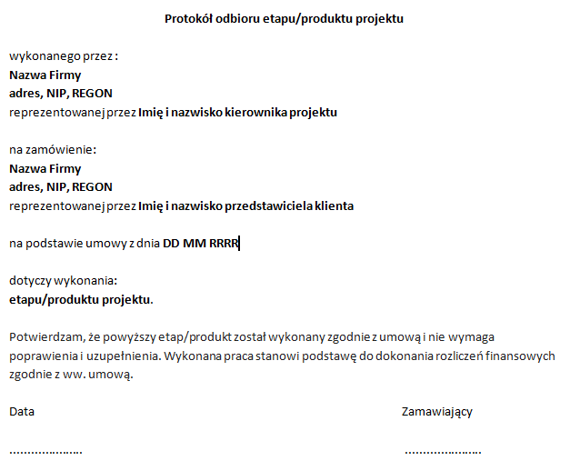

Na tym etapie należy uzyskać od klienta potwierdzenie odbioru stworzonej w ramach projektu aplikacji internetowej oraz następuje jego instalacja na serwerze produkcyjnym. Ponadto warto zebrać, usystematyzować i uzupełnić dokumentację projektową oraz zastanowić się jakie wnioski może wyciągnąć zespół dla siebie na przyszłość. Potem już albo aż można świętować zakończenie projektu.
Niekiedy zakończenie projektu jest wymuszone lub ewidentne i wówczas nie wymaga formalnej akceptacji ze strony klienta. Wymuszone zakończenie projektu to takie, kiedy określona jest sztywna data na kiedy aplikacja musi być gotowa w związku z konkretnym wydarzeniem. Na przykład strona konferencji musi zostać wykonana przed dniem startu rejestracji uczestników. Klient jest zmuszony zaakceptować produkt niezależnie od tego, czy spełnia on wszystkie wymagania. Projekty, których zakończenie jest ewidentne to takie, które wymagają niewielkiej lub wręcz żadnej weryfikacji, czy wymagania projektowe zostały spełnione. Na przykład projekt mający na celu analizę użyteczności strony zakończy się wraz z przedstawieniem raportu z analizy i rekomendacji.
Bardzo dużą grupę stanowią projekty, które nie mają aż tak sztywnej daty zakończenia oraz wymagają weryfikacji czy lista wymagań została spełniona. W przypadku takich projektów warto stosować formalny sposób odbioru projektu np. poprzez zastosowanie testów akceptacyjnych (więcej: Melnik G., Meszaros G., Bach J.: Acceptance Test Engineering Guide. Volume I: Thinking. How to Decide if Software is Ready for You and Your Customers. Microsoft patterns & practices. 2009). Wymagają one jednak nakładów pracy po stronie klienta i zespołu projektowego i są tworzone na wczesnych etapach realizacji projektu. W uproszczeniu jest to lista funkcjonalności, która musi zostać zweryfikowana przez jednego z członków projektu i odebrana przez klienta. Testy akceptacyjne są częścią testów systemowych, które obejmują o wiele szerszy zakres działań, m.in. testowanie wydajności, użyteczności, obciążenia.
Niezależnie jednak od tego czy efekt projektu wymaga formalnej akceptacji klienta, czy też nie, warto, aby na potrzeby dokumentacji projektu uzyskać od klinta podpis pod protokołem odbioru, którego wzór zamieszczono poniżej.
Rys. 2.6.1 Protokół odbioru
Ponieważ dotychczasowe działania podejmowane były na serwerze testowym, w momencie akceptacji aplikacji przez klienta można ją zainstalować na serwerze docelowym. W przypadku aplikacji z systemem zarządzania treścią (ang. Content Management System – CMS) warto przeprowadzić szkolenie klienta z obsługi panelu administracyjnego jeszcze przed instalacją, aby w przypadku wykrycia błędów móc je naprawić na serwerze deweloperskim.
Można wyróżnić dwa szczególnie popularne podejścia w instalowaniu aplikacji na serwerze produkcyjnym. W przypadku aplikacji, które zastąpią dotychczas istniejące rozwiązania, stronę instaluje się na serwerze produkcyjnym, ale pod domeną testową, przez co można ją raz jeszcze przetestować w środowisku identycznym z docelowym. Kiedy nowa strona zostanie przetestowana, a treści uzupełnione, można skierować domenę na nową lokalizację, co kończy proces instalacji. W przypadku nowych wersji już istniejących stron bardzo ważnym zagadnieniem instalacji jest przeniesienie treści ze starej strony na nową, co można wykonać manualnie, ale bardzo często podejmowana jest próba automatyzacji poprzez import starej bazy danych do nowego projektu. Drugie podejście polega na instalacji strony na serwerze docelowym i pod domeną docelową. Jest to podejście dużo bardziej inwazyjne, ale najczęściej stosowane w przypadku nowych projektów, gdzie adres strony nie jest rozpowszechniony lub znajdowała się pod nim jedynie pojedyncza strona informacyjna. [1 s.286]
Kolejnym elementem zamykania projektu jest przygotowanie dokumentacji. Jest ona szczególnie istotna, jeśli produkt powstały w wyniku realizacji projektu będzie dalej rozwijany, ulepszany, a także naprawiany i dostosowywany. W takim przypadku dokumentacje będzie punktem wyjścia dla kolejnego projektu, niezależnie od tego, czy będzie on realizowany przez ten sam czy inny zespół projektowy. Dokumentacja ma również znaczenie z punktu widzenia uczenia się i optymalizacji pracy organizacji. Zbiór informacji o przeszłych projektach może posłużyć jako materiały szkoleniowe dla nowych project manager’ów i innych członków grupy projektowej czy też jako pomoc w lepszym oszacowaniu czasu i kosztu w przyszłych projektach. Zwłaszcza ze względu na tę drugą możliwość późniejszego wykorzystania, dokumentacja nie powinna się ograniczać do przedstawienia jak projekt zaplanowano, ale powinna również uwzględniać jak projekt zrealizowano, jakie pojawiły się odchylenia od planu i dlaczego. Dokumentacja projektowa może również zostać wykorzystana jako wkład do projektu mającego na celu optymalizację realizacji projektów w organizacji. Należy jednak zachować rozwagę, ponieważ niektóre projekty były skazane na powodzenie mimo że proces ich realizacji pozostawiał wiele do życzenia i na odwrót. Wyciągając wnioski pochopnie można doprowadzić do sytuacji, w której powielane będą nieodpowiednie działania. [1 s.287-288]
Zagadnienie dokumentacji w projektach informatycznych bardzo często kojarzone jest jedynie z dokumentacją techniczną. Jest to dokumentacja przeznaczona dla programistów, którzy będą modyfikować program. Bardzo często podejmuje się działania w celu automatycznego wygenerowania dokumentacji technicznej wprost z kodu źródłowego. Możliwość zautomatyzowania tworzenia dokumentacji technicznej niestety wymaga również dodatkowej pracy programisty, dlatego niezależnie od tego czy zostanie ona opracowana tradycyjnie, czy też wygenerowana czas poświęcony na jej przygotowanie powinien zostać uwzględniony w harmonogramie projektu. Oprócz dokumentacji technicznej funkcjonuje również dokumentacja użytkowa przeznaczona dla użytkowników i administratorów systemu. Pełna dokumentacja projektowa powinna również uwzględniać:
Każdy dokument powinien uwzględniać wprowadzone w nim podczas realizacji projektu aktualizacje, zmiany i poprawki.
Dokumentacja nie musi ograniczać się do przedstawionych wyżej elementów, ale też nie wszystkie z nich musi zawierać. Każda dokumentacja tak jak projekt jest inna i przy jej tworzeniu powinno się przede wszystkim uwzględniać dobry stosunek nakładu pracy do korzyści.
Wśród wyżej wymienionych dokumentów pojawiło się podsumowanie spotkania ewaluacyjnego. To czy takie spotkanie się w ogóle odbędzie zazwyczaj stoi pod dużym znakiem zapytania. Najczęściej koniec jednego projektu, to początek kolejnego i brakuje czasu na spędzenie dodatkowych godzin nad już zamkniętym projektem, choć praktycy przekonują, że warto. Podczas takiego spotkania kierownik wraz z zespołem powinien odpowiedzieć na następujące pytania: [1 s.289-290]
W ten sposób doszliśmy do końca projektu, który można teraz zwieńczyć wspólnym wyjściem czy upominkiem dla całego zespołu projektowego.
W kolejnym rozdziale przedstawione zostaną konkretne metodyki realizacji projektów w oparciu o przedstawione w tym rozdziale etapy.
[1] Wysocki R.K.: Effective Project Management: Traditional. Agile, Extreme. Indianapolis. 2009. Wiley Publishing Inc.